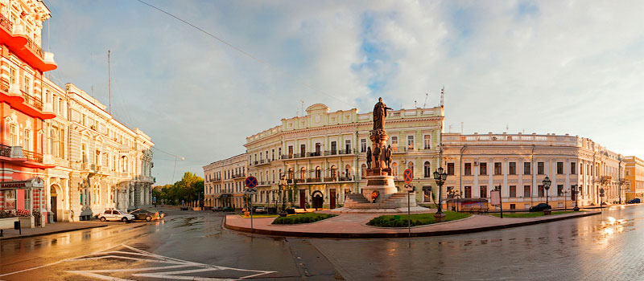

Дата та місце народження: 18 липня 2006 року, м. Донецьк
Освіта: Школа №3, м. Донецьк; Школа №9, м. Покровськ; НТУУ "КПІ" ім. Ігоря Сікорського, м. Київ
Одеса - місто-порт на північно-західному узбережжі Чорного моря. Це третє за величиною
місто України після Києва і Харкова, головний промисловий, культурний, транспортний, науковий
і курортний центр Північного Причорномор’я.
Одеса була заснована Катериною II в 1794
році.
Одеса - місто надзвичайної краси, його не даремно називають блакитною перлиною біля моря. Він
відомий славними пам'ятками, дивно веселими одеситами, цілющими курортами, красою Чорного моря
і великою кількістю сонця, навіть в зимовий час.
Одеса має багато гучних епітетів,
найвідомішими з яких є: Одеса-мама, Південна Пальміра і статус міста гумористів. Одеса є
дивним містом з точки зору сформованої тут культури і способу життя, які орієнтовані на
людські відносини. Також відома особлива одеська мова, яка є колоритною візитною карткою
міста.
У місті багато історичних будівель та об'єктів, пам'ятників, театрів і музеїв.
